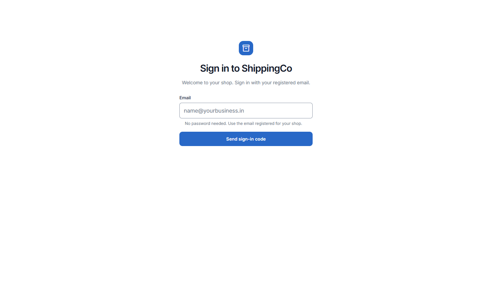
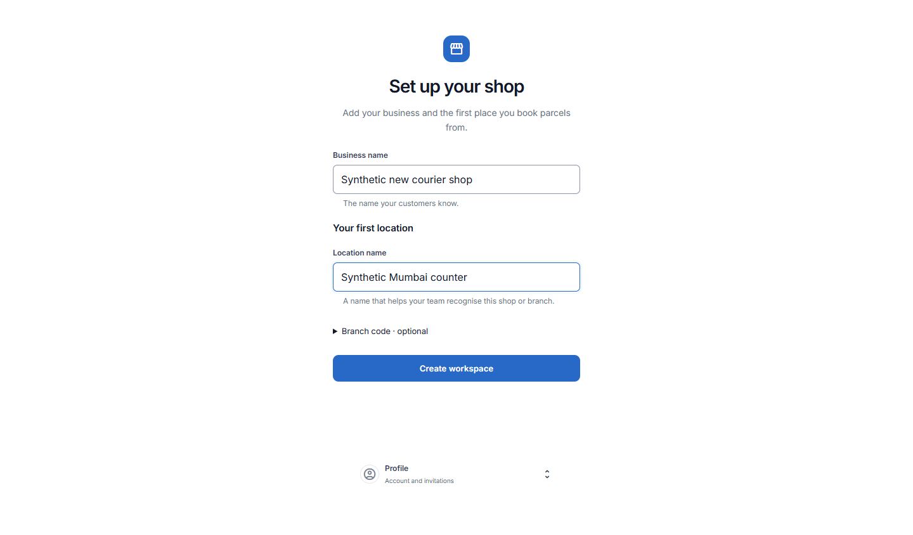

Sign in, join a shop and sign out
Enter your workspace with an email code, set up your first shop, and sign out safely.
Screen 1 - Sign in
- Open ShippingCo. Enter the email registered for your business in Email.
- Select Send sign-in code. No password is needed.
- If the email has access, an 8-digit code is sent. Check your inbox and spam folder.
- Enter all 8 digits in Sign-in code. You can paste the code. Select Verify and continue.
- The code expires after 10 minutes. Use Use email again to return and request another code or correct the email.
- If sign-in fails, check the address and code. The app does not show whether an unknown email has an account.

Screen 2 - Set up your first shop
- This screen appears when your signed-in account does not yet have a workspace.
- Business name: enter the name your customers know. Use up to 120 characters.
- Location name: enter a name your team recognises, such as Main shop or Pune counter. Use up to 120 characters.
- Branch code - optional: MAIN is already supplied for the first branch. Open this section only if your business uses another short code.
- A custom location code starts with a capital letter and uses capital letters, numbers or underscores, up to 32 characters.
- Select Create workspace. The app creates the business and its first location.
- If the result is uncertain, the entered details stay locked. Select Retry same request; do not start another workspace.
- After the workspace opens, complete prices, tax rules and receiving accounts before normal counter work.

Screen 3 - Join another shop or branch
- Open Profile, then Account and invitations.
- If an administrator gave you an invitation, open the invitation section.
- Invitation code: paste the exact invitation code you received. It is private; do not put it in a customer note.
- Select Accept invitation. Wait while the app checks current access.
- An expired or withdrawn invitation cannot be used. Ask the administrator for a new one.
- After acceptance, choose the authorised branch from the Franchise selector. You will only see branches the app permits.
Screen 4 - Profile and sign out
- Open Profile at the bottom of the sidebar. Account and invitations contains your account tools.
- Account reference for support shows the account reference an administrator may need. It is not a parcel tracking number.
- Select Sign out when you finish using the device.
- If a sensitive request is still being checked, finish its retry or recovery before leaving. Do not bypass that warning.
- If the connection interrupts sign-out, private workspace data is hidden. Use Retry sign out to finish closing the session.
- On a shared counter computer, wait for the signed-out screen before giving the device to someone else.